Devices connector
You can redirect MIDI events from input device to output device(s) using DevicesConnector class. To understand what input and output MIDI device is in DryWetMIDI, please read the Overview article.
Device connector connects an instance of the IInputDevice to one or multiple instances of the IOutputDevice. To get an instance of DevicesConnector class you can use either its constructor or Connect extension method on IInputDevice. In the first case you need to call the Connect method after you get an instance of the DevicesConnector. In the second case the method will be called automatically.
Also you can call Disconnect at any time to disable connection between devices.
The image below shows how devices will be connected in DryWetMIDI:

Following small example shows basic usage of DevicesConnector:
using Melanchall.DryWetMidi.Multimedia;
// ...
using (var inputDevice = InputDevice.GetByName("MIDI In"))
using (var outputDevice1 = OutputDevice.GetByName("MIDI Out 1"))
using (var outputDevice2 = OutputDevice.GetByName("MIDI Out 2"))
{
var devicesConnector = new DevicesConnector(inputDevice, outputDevice1, outputDevice2)
devicesConnector.Connect();
}
So if a MIDI event is received by MIDI In device, the event will be sent to both MIDI Out 1 and MIDI Out 2.
Don't forget to call StartEventsListening on input device to make sure EventReceived will be fired and MIDI event redirected to output devices. Read more in the Input device article.